Centro, raggio
Barra degli strumenti / icona:


Menu: Disegna - Cerchio - Centro, raggio
Scorciatoia: C, R
Comandi: circlecr | cr
Descrizione:
Questo strumento vi permette di creare cerchi conoscendo la posizione del
centro e la misura del raggio.
Procedura:
- Inserire il valore del raggio nella barra delle opzioni strumento oppure
utilizzare il comando raggio per inserire il valore del raggio nella linea di
comando.
- Definire la posizione del centro della circonferenza attraverso il mouse
oppure specificandone le coordinate nella linea di comando.